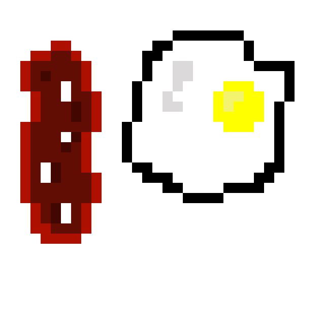

This page is to document my journey for my first ever commercial game development exercise. I will share some notes on development in posts and some grpahics I hand craft under Pixel Art sections.
All links are ordered in reverse chronogical order.
2025-07-05 - Still Shaving the Yak
All arts below are hand crafted by me either using Resprite on tablet or Aseprite on desktop computer. Exports are in 20x scale unless explicitly stated the another scale
| Date Created | Thumbnail | Name | Size (WxH) | Animated (T/F) |
|---|---|---|---|---|
| 2025-07-04 | |
Sonnie | 32x32 | True |
| 2025-06-29 | |
Sbahn | 64x32 | False |
| 2025-06-29 | |
Avatar State | 32x32 | False |
| 2025-06-28 | |
BSOD | 64x64 | True |
| 2025-06-24 | |
Ottoman Dwarf | 64x64 | False |
| 2025-06-25 | |
Grass in the Wind | 32x32 | True |
| 2025-06-25 | |
Medicines | 16x16 & 32x32 & 64x64 | False |
| 2025-06-25 | |
Big Blue Ball | 64x64 | False |
| 2025-06-25 |  | Breakfast | 32x32 | False |
| 2025-06-24 | |
Pine Tree | 32x32 | False |
| 2025-06-24 | |
Apple | 32x32 | False |
| 2025-06-24 | |
Skeleton | 32x32 | False |
| 2025-06-24 | |
Fox | 32x32 | False |
| 2025-06-24 | |
Airplane | 32x32 | False |
| 2025-06-24 | |
Duckie | 16x16 | False |
Website colors are inspired by the Fresh Ink Palette by Jude Buffum.